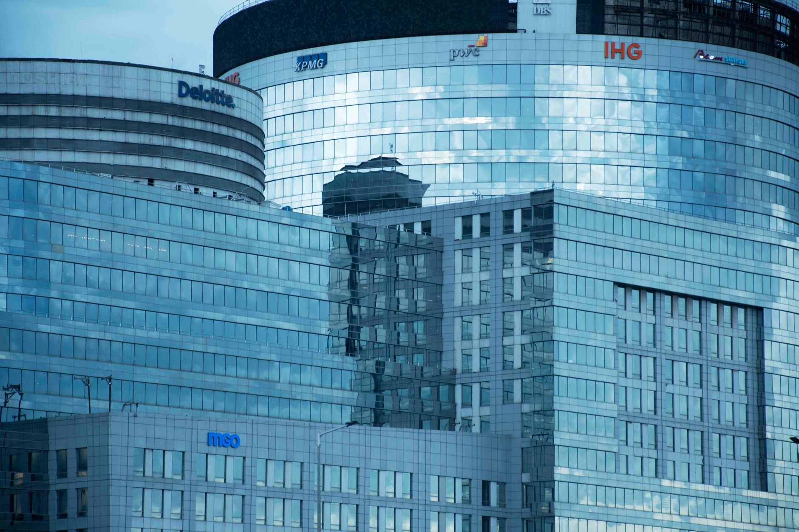

The core of the BBC investigation
A recent and intensive investigation conducted by the BBC has brought to light serious allegations concerning the financial management of Roman Abramovich. The reports suggest that Deloitte, one of the world's largest professional services networks, was involved in processes that helped facilitate the evasion of taxes on the billionaire's massive assets. This discovery has sent shockwaves through the global financial community, raising questions about the oversight responsibilities of major auditing firms.
The investigation focuses on how complex webs of offshore companies and shell entities were used to shield wealth from national tax authorities. By utilizing sophisticated accounting maneuvers, these entities were able to move significant sums of money across borders without triggering the necessary tax liabilities. The BBC's findings suggest that these were not merely accidental errors but systematic attempts to manipulate financial records.
How the document falsification occurred
According to the investigative findings, the process involved the creation and maintenance of documents that did not accurately reflect the true ownership or origin of certain funds. These documents were essential in convincing regulators and tax agencies that the wealth held by Abramovich was structured in a way that required little to no taxation. The complexity of these arrangements made it difficult for outside observers to penetrate the veil of secrecy.
The methods used to obscure the financial trail included several key tactics:
The role of Deloitte in the scandal
Deloitte's involvement is particularly controversial because of the firm's reputation as a guardian of financial integrity. The BBC report alleges that the firm provided the professional legitimacy required to make these fraudulent structures appear compliant with international laws. By auditing and verifying these questionable documents, the firm essentially provided a seal of approval that allowed the tax evasion to proceed undetected for years.
The scale of the alleged deception suggests a profound failure in the gatekeeping role that major accounting firms are expected to perform for the global economy.
While Deloitte has historically maintained strict compliance standards, this investigation suggests a breakdown in their internal controls. Critics argue that the pursuit of high-value clients may have compromised the firm's commitment to ethical auditing. As the investigation progresses, the firm faces the possibility of massive fines and a significant loss of reputation among global investors.
Global implications for financial regulation
This scandal is not just about one billionaire and one accounting firm; it highlights a systemic weakness in how global wealth is monitored. The ability of ultra-high-net-worth individuals to move money through opaque channels remains a significant challenge for international regulators. This case serves as a catalyst for calls to increase transparency in offshore banking and to tighten the rules governing the auditing industry.
Governments around the world are now under pressure to implement stricter 'Know Your Customer' (KYC) and Anti-Money Laundering (AML) protocols. If professional service firms are found to be complicit in tax evasion, the legal repercussions could extend far beyond simple fines, potentially including criminal charges for the individuals involved in the orchestration of these schemes.
The aftermath and future outlook
As the news continues to develop, Roman Abramovich and Deloitte are expected to issue formal responses to the BBC's findings. Legal experts suggest that a series of lawsuits and regulatory inquiries are inevitable. The outcome of these proceedings will likely set a precedent for how professional services firms are held accountable for the actions of their clients and the accuracy of the documentation they oversee.
For the general public, this story is a stark reminder of the complexities of global finance and the importance of investigative journalism. As we navigate a world of increasing geopolitical instability and economic shifts, understanding the mechanisms of power and wealth becomes more crucial than ever. For more on how global events impact regional security, you might find our coverage of the Riyadh airport attack escalates Middle East tensions useful for understanding broader international tensions.
See Also
If you enjoyed this Current Events article, check out Riyadh airport attack escalates Middle East tensions for more useful reading.